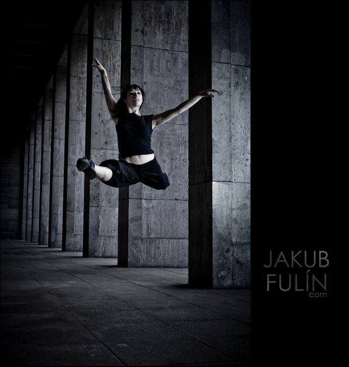

Alma Edelstein was born in 1983 in Buenos Aires, Argentina. She started her dance education at the National Ballet School of Buenos Aires, and got her first part time engagement at 12 as a young dancer at the “Teatro Municipal de Avellaneda” (Arg)
In 1998, full sponsored by Air France, she joined the “Biarritz international Ballet competition” (France) where she was awarded with the “Artistic Grand Prix” and the first mention.
In the year 2000, the Swiss Foundation Pierino Ambrosoli invited her to join the “Prix de Laussane” as one of the 12 young dancers selected around the globe for a scholarship.
Later that year she won the Gold award for a Modern dance solo presented at the “Latin-American International Dance Competition” (Cordoba-Argentina) and was accepted into the “Teatro Nacional San Martin -School-” (Buenos Aires-Arg) where she began her education in Contemporary Dance.
In 2006 she completed a bachelor degree in Performing Arts for Contemporary Dance at the “Anton Bruckner Privatuniversität” -IDA- Institute for Dance Arts in Linz, (Austria). During these 3 years, she danced for different projects at CCL (Choreographic Centre Linz) and studied with choreographers such as: Milli Bitterly,Claudia Heu, Nicole Caccivio, Phillipe Riera, Teresa Ranieri, Rose Breuss, Martin Sonderkamp, Jan Kodet, Edita Braun, and Johannes Randolf, among others.
From January 2004 until July 2005 she was engaged by the Landestheater Linz. The same year she was stagier at the Swedish dance company “Norrdans” directed by Jeanne Yasko.
In 2006 she worked at the dance company of the Stadttheater Hildesheim (Germ.) under Carlos Matos´ direction.
From 2008 until 2010 Alma was engaged as a soloist at the Landestheater Coburg ballet ensemble directed by Katharina Torwesten. Here she created her first 3 pieces, which were shown regularly at the theatre to very positive reviews. In 2011 she was engaged by the dance company of the Landestehater Flensburg, where she worked as a soloist until 2012 when she moved to Berlin and became a freelancer.
During this time she developed a duo that was selected to be shown at the At.tension festival, worked for Katja Erdmann-Rasjki in Stuttgart, Adriana Barentein in BsAs, and for Fernanda Guimares in Berlin.
In 2014 the Art University of Buenos Aires (UNA) invited her to teach a seminar of Ballet for Contemporary Dancers. The renowned Borges Cultural Center selected her for a choreographic residency, where she developed “atempo de tic toc”, a dance theatre piece for 7 dancers.
The same year, Alma, in cooperation with media artist Fabian Kesler (ARG) and media artist and software developer James Hudson ( AUS), won a grant from the city of Buenos Aires to develop an installation in 2015.
Currently, Alma is based in Berlin, where she directs the ST.VITO Experience: a multimedia project that fuses music, visuals, sensor technology, audience interaction, dance and theater; into site-specific and walking-act performances.